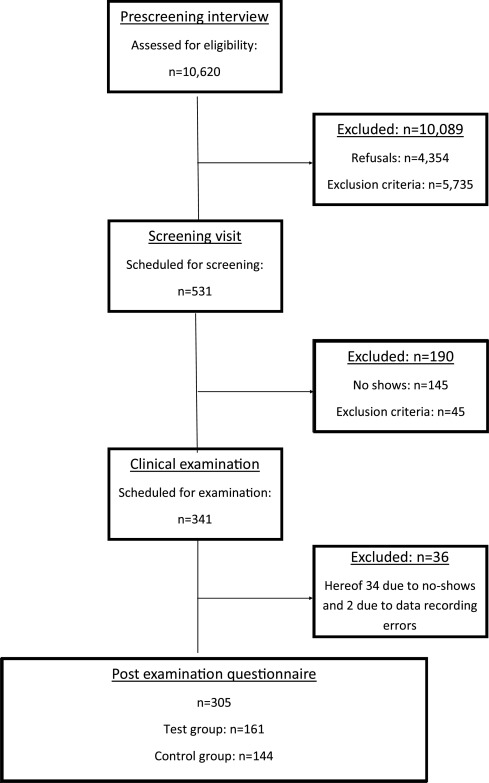

Gingival health status in individuals using different types of toothpaste

1. Introduction
The oral cavity harbours a complex microbiota comprised of more than 700 different bacterial species [1,2],
and the resident microbiota is critical for maintenance of oral homeostasis [3,4]. On a daily basis, the
resident oral microbiota is almost constantly stressed by ecological perturbations such as eating and
drinking. Self-performed oral hygiene is a frequent perturbation, and the magnitude of this perturbation is
probably influenced by frequency, but is also dependent on choice of toothpaste. In attempts to enhance the
natural salivary antimicrobial defence mechanisms, oral health products including toothpastes have been used
with different added ingredients. Zendium™ toothpaste contains a triple enzyme system including
amyloglucosidase, glucose oxidase and lactoperoxidase that generates the natural antimicrobial agents,
hydrogen peroxide and the hypothiocyanite ion. Salivary peroxidases catalyse the oxidation of thiocyanate
(SCN−) to hypothiocyanite (OSCN−) via hydrogen peroxide. Peroxidases and thiocyanate are natural
constituents of saliva, whereas hydrogen peroxide also originates from bacterial metabolism in the oral
cavity [[5], [6], [7]]. The salivary proteins, lactoferrin and lysozyme are also added to the toothpaste.
Lactoferrin binds iron, whereby the availability of iron as a co-factor in bacterial enzymes is reduced.
Lactoferrin thereby acts as a bacteriostatic agent. Lactoferrin also exerts direct bactericidal effect on
certain cariogenic bacteria, e.g. Streptococcus mutans as well as periodontal pathogens [for review 8].
Lysozyme breaks down peptidoglycan, which is an essential part of the cell wall of the gram-positive
bacteria, and thus acts as a bactericidal agent. However, lysozyme also acts in a bacteriostatic manner
through agglutination of bacteria inhibiting bacterial adhesion and colonisation [for review [8]].
It has recently been shown that the use of a toothpaste containing enzymes and proteins (Zendium™) can boost
the natural salivary defences by increasing the levels of lysozyme and hydrogen peroxide in vivo and
hypothiocyanite in vitro and reduce the growth and viability of oral bacteria in microbiological models [9].
Similarly, the findings of a recent randomised clinical study on the composition of supragingival bacterial
biofilms indicate that the use of a toothpaste containing enzymes and proteins can augment natural salivary
defences [10]. Specifically, by analysis of supragingival plaque samples collected from 102 subjects it was
reported that use of toothpaste containing enzymes and proteins for 14 weeks resulted in a statistically
significant increase in 12 gingival health-associated taxa together with a statistically significant
decrease in 10 periodontitis-associated taxa [10]. However, clinical recordings on gingival health in long
term users of toothpaste containing enzymes and proteins (Zendium™) were not investigated.
To address this question we employed clinical data recorded from a cohort of 305 subjects, which had used
the same toothpaste for > 1 year (test group: n = 161 vs. control group: n = 144). Accordingly, the purpose
of the present investigation was to test the hypothesis that medium term use (>1 year) of a toothpaste
containing natural enzymes and proteins (Zendium™, test) is associated with a better gingival health in
terms of gingival inflammation, plaque levels and gingival bleeding than medium term use of toothpastes
without antimicrobial/antiinflammatory active ingredients (control).
2. Materials and methods
2.1. Study design and objectives
This was a single blind, with respect to the clinician, monadic study. Screening visits and clinical
examinations were performed from May 2016 to October 2016 at the Department of Odontology, Faculty of Health
and Medical Sciences, University of Copenhagen. Prior to participation, all subjects were informed about the
nature and extent of the study and provided informed consent. The study was conducted in accordance with the
Helsinki Declaration, and approved by the Regional Ethical Committee (H-15016471). The purpose of the
present investigation was to characterise and compare gingival health status in individuals using different
types of toothpaste.
2.2. Time line and recruitment strategy
The study time line is detailed in Fig.1. Based on a power calculation from a previous pilot study a total
of 240 subjects (120 in each group) were estimated to be required to complete the study. The recruitment
strategy is visualised in Table 1, which shows that the study participants were recruited with the intention
to ensure a balanced age and gender distribution between the test and control groups. The age groups
comprised the following three groups: 18–30 years, 31–55 years and 56 years of age and above.

2.3. Pre-screening telephone interview
A total of 10,620 potential study participants were contacted by telephone by the market research agency TNS
Gallup A/S and asked to take part in this study. The participants were informed about the purpose of the
telephone interview, and subsequently screened using a pre-screening questionnaire concerning basic
exclusion criteria including age below 18 years, residence in the Capital Region of Denmark for less than 5
consecutive years, employment in oral health care industry, insufficient or irregular oral health care,
wearing partial or full dentures, having oral piercings, and use of mouthwash within the previous 4 weeks.
Finally, each potential participant was asked about their toothpaste usage within the last 12 months.
Participants who had used any kind of Zendium™ toothpaste continuously over the latest 12 months were
eligible for inclusion in the test group. Participants who had used any other toothpaste without
antimicrobial/ antiinflammatory ingredients apart from Zendium™ were eligible for inclusion in the control
group. A total of 4354 persons refused to participate and a further 5735 persons did not fulfil the
inclusion criteria based on the pre-screening questionnaire. Thus, a total of 531 participants were
scheduled for the screening visit.
2.4. Screening visit
A total of 386 participants attended the appointment for the screening visit, which was performed either by
DB or AMLP. At the screening visit the participants provided informed consent and then answered a
questionnaire with regards to general health and medication intake. Furthermore, a clinical screening of
oral health status, including presence of periodontitis and dental caries was performed. Inclusion criteria
for the clinical examination included confirmation of continuous use of specific toothpaste eligible for
inclusion in either of the study groups, age above 18 years and willingness to participate in the
investigation. Exclusion criteria included periodontitis and/or dental caries requiring treatment, less than
20 natural teeth (excluding third molars), on-going orthodontic treatment, scale and prophylaxis in the
month prior to enrolment, type 1 and type 2 diabetes, autoimmune, inflammatory systemic diseases, current
antibiotic treatment within 3 months of the screening appointment as well as alcohol and drug abuse. Based
on the screening visit a total of 341 subjects were invited to attend the clinical examination. As this
study was part of an on-going investigation on oral malodour and the composition of the oral microbiota,
participants eligible for the clinical examination were informed to avoid the following: consuming spicy
foods or alcohol (24 h prior to their appointment), brushing their teeth (from 11 pm on the evening before
their appointment), eating and drinking (2 h prior to their appointment), use of mouthwash or changing the
toothpaste used as part of normal oral hygiene, use of make-up, body lotions, perfume or after shave (on the
morning of the test visit).
2.5. Clinical examination
A total of 305 participants completed the clinical examination, in which gingival inflammation, plaque
levels and gingival bleeding were recorded at six sites of each tooth (third molars excluded). Gingival
inflammation was scored from 0 to 4 (0: absence of inflammation, 1: localised mild inflammation, 2:
generalised mild inflammation, 3: moderate inflammation and 4: severe inflammation) using the Modified
Gingival Index (MGI) as previously described [11]. Plaque index (PI) was recorded from 0 to 5 after the
disclosure of plaque (0: no plaque, 1: speckles of plaque along the gingival margin, 2: a continuous line of
plaque up to 2 mm in depth along the gingival margin, 3: plaque covering up to 1/3 of the assessment area,
4: plaque covering up to 2/3 of the assessment area, 5: plaque covering the whole of the assessment area) by
use of the Modified Quigley and Hein index [12]. Gingival bleeding index (BI) was scored from 0 to 2 (0: no
bleeding, 1: bleeding within 30 s of probing, 2: spontaneous bleeding) as previously described [13]. All
clinical examinations were performed by the same examiner (MD).
2.6. Post examination questionnaire
After completion of the clinical examination each participant underwent a focused questionnaire addressing
drinking and eating habits including: smoking habits (daily, occasionally, former or never smoker; type of
tobacco used as well as snus, e-cigarettes and nicotine chewing gum), consumption of tea, coffee, soda, soft
drink and alcohol (frequency, type, number of beverages, cups and glasses), chewing gum (frequency), candy
and snack habits (frequency daily, weekly, monthly, seldom). Furthermore, oral hygiene habits (tooth
brushing, manual and/or electric toothbrush, frequency, use of additional oral hygiene products including
mouthwash, dental floss, tooth picks, soft picks, interdental brushes; the use of whitening products) and
self-perceived oral health status were scored as well.
2.7. Statistical analysis
For between group comparisons, an analysis of covariance (ANCOVA) model was conducted for each outcome
measure separately. Group was included as a fixed effect, along with gender and age as covariates, and each
of their two-way interactions. Brushing frequency and toothbrush type (manual/electric) were also included
as fixed effects. The interaction terms were removed if they were not significant based on a significance
level of 5%.
3. Discussion
The purpose of the present investigation was to test the hypothesis that use of fluoride toothpaste
containing naturally occurring enzymes and proteins (Zendium™) for more than a year is associated with a
better gingival health than use of toothpastes without antimicrobial/ antiinflammatory active ingredients
(control). The main finding was that test group who had used Zendium™ had significantly better gingival
health status than the control group in terms of gingival inflammation, plaque levels and gingival bleeding.
One way to explain the clinical findings from the present study is that the toothpaste used by the test
group contains a triple enzyme system, which includes amyloglucosidase, glucose oxidase and lactoperoxidase.
Saliva contains lactoperoxidase, lysozyme and lactoferrin, and salivary levels of these particular enzymes
and proteins may be involved in shaping the composition of the resident oral microbiota [14], and therefore
potentially influence oral health status [15,16]. One possible explanation, which requires further research,
is that use of toothpaste, which contains enzymes and proteins that are naturally present in saliva, may
augment salivary defence mechanisms in balancing the oral microbiota. This assumption is supported by data
from a randomised clinical trial, which studied the impact of toothpaste use for 14 weeks on the composition
of the oral microbiota [10]. Notably, the use of a toothpaste containing enzymes and proteins (Zendium™)
induced significant alterations to the supragingival microbial community over time in orally healthy
individuals, whereas the control toothpaste did not result in a shift of the supragingival microbial
community. Specifically, the use of the test toothpaste with enzymes and proteins induced a significant
increase in health-associated bacterial species together with a concomitant decrease in abundance of
periodontitis-associated bacterial species [10]. Thus, clinical data from the present study and
microbiological data presented in [10] are consistent with each other, and also consistent with the results
of a recent controlled clinical trial on gingival health [17].
The supragingival microbiota has been reported to differ between orally healthy individuals with different
levels of sugar intake [18], and smoking status seems to influence the composition of the subgingival
microbiota in oral health [19] and periodontitis [20], which suggest an impact of diet and lifestyle on the
oral microbiota. While it is interesting to know the compositional changes of the microbiota associated with
ecological perturbations such as diet, smoking and toothpaste use, such studies provides no information on
bacterial phenotypes. Notably, metatranscriptomic analysis has demonstrated that smoking impacts functional
signatures of the subgingival microbiota [21] and bacterial metabolic gene expression of saliva is different
in patients with periodontitis and dental caries compared to orally healthy persons [22]. Thus in a future
study it would be interesting to investigate if long term use of toothpaste with enzymes and proteins
(Zendium™) also can be reflected in the metabolic gene expression of the resident microbiota.
In this study, we also found that the women generally had better gingival health status than men, in terms
of lower levels of gingival inflammation, plaque and gingival bleeding, which supports the findings of
previous studies [23,24]. In addition, participants at the age of 18–30 years had significantly higher
levels of gingival inflammation than the participants from the older age groups. Their levels of plaque and
gingival bleeding were also higher than those of participants aged 31–55 years, irrespective of the
toothpaste use. In Denmark, the government provides free dental care to all children, up to the age of 18
years. From the age of eighteen the young adults need to find a private dentist for regular dental follow-up
examination and dental treatment. However, almost 25% of the young adults aged 18–34 years drop out of the
dental service system for a period of time, and do not attend a private dentist regularly, mainly due to the
costs [23,25]. In this period they are likely to develop dental problems like gingivitis and dental caries,
and this may also explain our findings of poorer gingival conditions in the young age group.
In this study, gingival health status was determined by traditional clinical parameters. The continuous
development of novel technologies such as metaproteomics and multiplex panels offer new opportunities for
investigation of the molecular biological mechanisms underlying these findings. Thus it has been shown that
salivary levels of certain immunological markers are associated with periodontitis [[26], [27], [28], [29]]
and gingivitis [[30], [31], [32]].
In the present study only participants with good oral health and not requiring treatment for periodontitis
or dental caries were included. Thus, the data presented in this study may not be representative of
participants with manifest oral disease such as periodontitis or dental caries. Furthermore, no information
on socio-economic status was recorded. Oral health status is linked with socioeconomic status [33], and
socio-economic status has been reported to impact the composition of the oral microbiota [34]. In this
study, the participants in the test group tended to drink less soft drinks and to eat less candy than the
control group, which suggest that choice of toothpaste might be associated with consumption and attitude
towards health-related consumer choices. Thus, it would be interesting to address these aspects in a future
study.
In conclusion, data from the present single-blinded clinical study indicate that long term use of toothpaste
containing enzymes and proteins (Zendium™) is associated with better gingival health status than use of
other toothpastes. Future studies, which perform simultaneous characterisation and comparison of clinical,
microbiological and immunological data in persons using different types of toothpaste, may reveal the
mechanisms behind the findings from the present study.
4. Conflict of interest statement
The study was financially supported by Unilever Oral Care UK and the Faculty of Health and Medical Sciences,
University of Copenhagen.
The Study Coordinator (AMLP), the Principal Investigator (DB) and clinical investigator (MD) are all
employed at the University of Copenhagen. JN, MIE and AKG are employees of Unilever.
TNS Gallup DK performed the initial recruitment, and the post-clinical examination interview of study
participants regarding habits etc.
The study was performed according to the ICH Harmonised Tripartite Guideline for Good Clinical Practice
(CPMP/ICH/135/95) and the Declaration of Helsinki and approved by the Local Committee of Research and Ethics
of the Capital Region of Denmark (H-15016471).
This article is published as part of a supplement supported by Unilever Oral Care.
Leave a comment